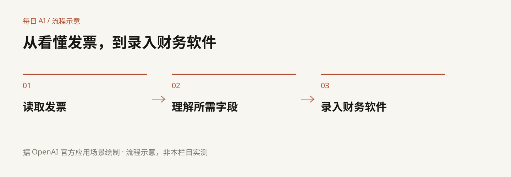
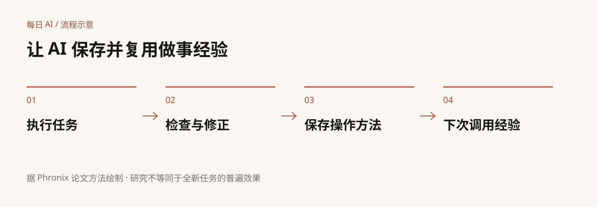
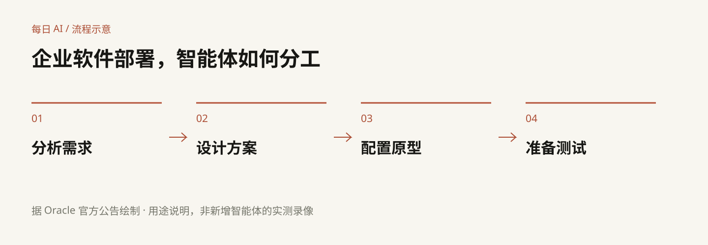

头条：GPT-6.1 Terra
 官方模型页：身份、用途和使用入口。成片聚焦主体区域，中文要点另行排版。
官方模型页：身份、用途和使用入口。成片聚焦主体区域，中文要点另行排版。
 标准 API 单价：每百万输入 token 1 美元、输出 5 美元；比较范围在画面上明确标注。
标准 API 单价：每百万输入 token 1 美元、输出 5 美元；比较范围在画面上明确标注。

本栏目据官方场景绘制的流程示意。后续沿口播分步揭示，非软件运行录像。
OpenAI 科研材料
 保留真实论文标题与作者归属；成片配中文解释与外部核验状态，不要求观众阅读整页公式。
保留真实论文标题与作者归属；成片配中文解释与外部核验状态，不要求观众阅读整页公式。Phronix：经验复用
 论文标题与作者原页裁切，研究选读。
论文标题与作者原页裁切，研究选读。
 已换为 PDF 原图，保留全部文字标签和图注。CC BY 4.0，采用时保留作者署名。
已换为 PDF 原图，保留全部文字标签和图注。CC BY 4.0，采用时保留作者署名。

中文讲解图与论文原图配合使用，避免只展示陌生英文术语。
Mistral：发布状态跟进
 真实状态截图：Upcoming release / 10 月 31 日预计。成片聚焦状态和日期，去掉动态倒计时区域；跨日复核。
真实状态截图：Upcoming release / 10 月 31 日预计。成片聚焦状态和日期，去掉动态倒计时区域；跨日复核。甲骨文：平台与分工
 官方平台界面参考，用于交代 Success Navigator；不冒充新增智能体的本栏目实测。
官方平台界面参考，用于交代 Success Navigator；不冒充新增智能体的本栏目实测。
 官方项目进度界面，展示产品背景；中文要点与原始截图分层呈现。
官方项目进度界面，展示产品背景；中文要点与原始截图分层呈现。

据官方公告绘制；具体切换点由真人口播决定。
备用动图与 BGM
备用，未选入主画面。官方社区家族宣传动图转视频，原始 480×270、6fps，无声音。不是已找到的高清 30 秒介绍片，也不是功能演示。Carefree — Kevin MacLeod / CC BY 4.0。已准备原文件与署名，人声避让、循环接缝和完整混音审听待录音。
来源及采用边界：素材清单 · 镜头对应 · 署名。视频未渲染，人工终审待完成。